Unterweisung mit Unterschrift
Das Sicherheitsgespräch der Woche ist fertig: vorlesen, Fragen stellen, das Team unterschreibt auf dem iPhone, der Nachweis kommt als PDF. Ohne Konto.
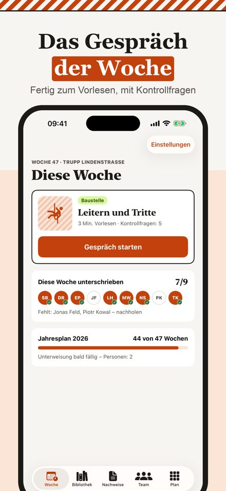
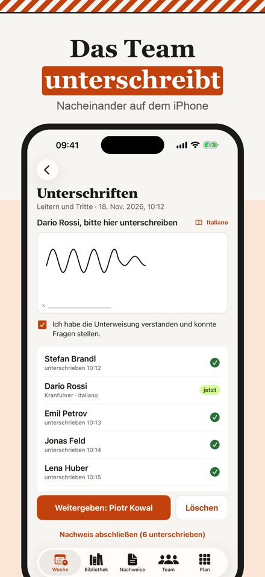
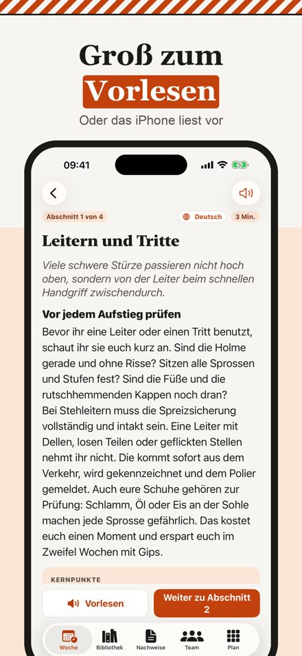
Brifora ist die Bibliothek für kurze Sicherheitsgespräche auf Baustelle, in Werkstatt und Lager. Jede Woche liegt ein passendes Thema bereit, vier Minuten zum Vorlesen, mit fünf Kontrollfragen. Dein Team unterschreibt nacheinander auf dem iPhone. Brifora macht daraus den Unterweisungsnachweis mit Thema, Datum, Ort, Unterweisendem und Unterschriften als PDF. Der Jahresplan zeigt, wer wann wieder dran ist.
Ohne Abo: 6 Gespräche (eines je Bereich), 1 Team, 2 Nachweise mit Unterschriften im Monat. Brifora Plus ist ein Monats- oder Jahresabo (Testzeitraum beim Jahresabo): alle Gespräche und neue Pakete jedes Quartal, unbegrenzte Nachweise als PDF und CSV, Jahresplan mit Erinnerung, mehrere Teams und Baustellen, eigene Gespräche, Papierlisten scannen. Verlängert sich automatisch, jederzeit in den Apple-ID-Einstellungen kündbar. Keine Werbung, kein Konto.
Brifora ist ein unabhängiges Werkzeug ohne Verbindung zu Behörden, Unfallversicherungen oder Verbänden. Die Gespräche ersetzen weder die Gefährdungsbeurteilung noch die betriebsspezifische Unterweisung. Für die Pflichten im Arbeitsschutz bleibt der Betrieb verantwortlich.
Causeries, signatures et PDF
La causerie sécurité de la semaine est prête : lire, poser les questions, l’équipe signe sur l’iPhone et la feuille d’émargement part en PDF. Sans compte.
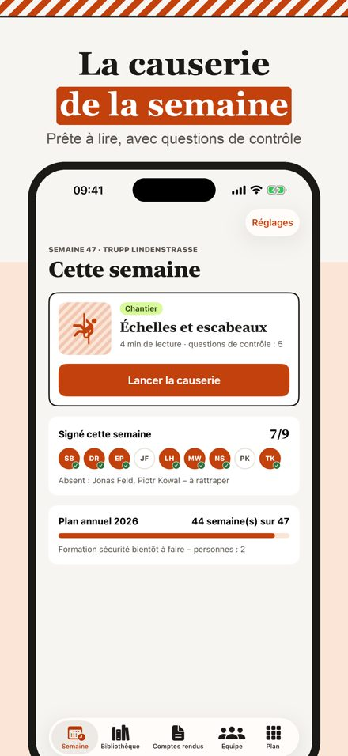
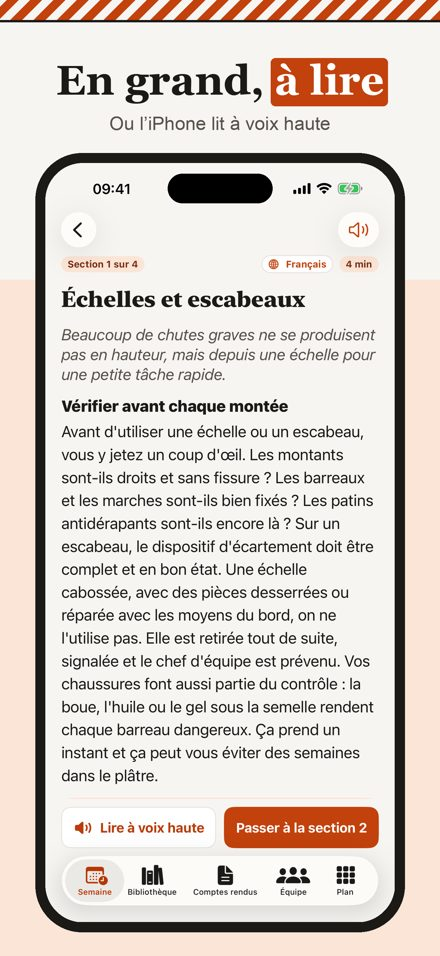
Brifora est la bibliothèque de causeries sécurité courtes pour le chantier, l’atelier et l’entrepôt. Chaque semaine, un thème adapté vous attend : quatre minutes à lire, avec cinq questions de contrôle. Votre équipe signe à tour de rôle sur l’iPhone. Brifora en fait le compte rendu avec thème, date, lieu, animateur et signatures en PDF. Le plan annuel montre qui doit repasser et quand.
Sans abonnement : 6 causeries (une par domaine), 1 équipe, 2 comptes rendus signés par mois. Brifora Plus est un abonnement mensuel ou annuel (essai sur l’annuel) : toutes les causeries et de nouveaux packs chaque trimestre, comptes rendus PDF et CSV illimités, plan annuel avec rappel, plusieurs équipes et chantiers, causeries personnelles, scan des feuilles papier. Renouvellement automatique, résiliable à tout moment dans les réglages de l’identifiant Apple. Sans publicité, sans compte.
Brifora est un outil indépendant, sans lien avec des administrations, des organismes de prévention ou des fédérations. Les causeries ne remplacent ni l’évaluation des risques ni la formation propre à l’entreprise. L’employeur reste responsable de ses obligations de sécurité.
Pogadanki, podpisy, protokół
Pogadanka BHP na ten tydzień jest gotowa: przeczytaj, zadaj pytania, zespół podpisuje na iPhonie, a protokół trafia do PDF. Bez konta.
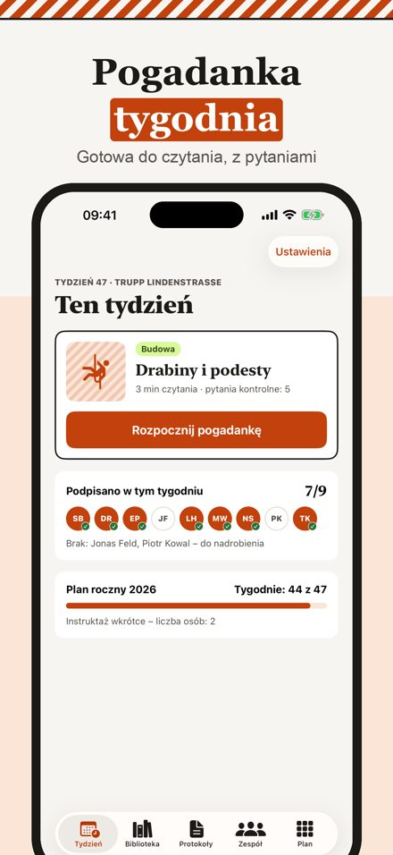
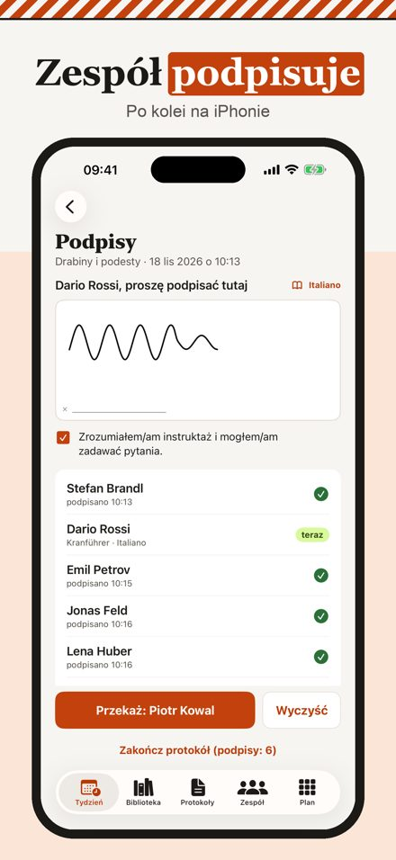
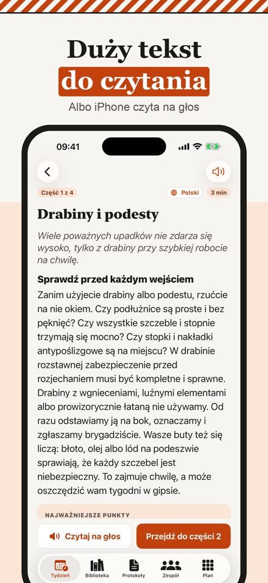
Brifora to biblioteka krótkich pogadanek BHP na budowę, do warsztatu i magazynu. Co tydzień czeka pasujący temat: cztery minuty czytania i pięć pytań kontrolnych. Zespół podpisuje się po kolei na iPhonie. Brifora tworzy z tego protokół z tematem, datą, miejscem, prowadzącym i podpisami w PDF. Plan roczny pokazuje, kto i kiedy ma kolejny instruktaż.
Bez subskrypcji: 6 pogadanek (po jednej z obszaru), 1 zespół, 2 podpisane protokoły w miesiącu. Brifora Plus to subskrypcja miesięczna lub roczna (z okresem próbnym przy rocznej): wszystkie pogadanki i nowe pakiety co kwartał, bez limitu protokołów PDF i CSV, plan roczny z przypomnieniem, kilka zespołów i budów, własne pogadanki, skanowanie list papierowych. Odnawia się automatycznie, anulujesz w ustawieniach Apple ID. Bez reklam i konta.
Brifora to niezależne narzędzie, niezwiązane z urzędami, instytucjami ubezpieczeniowymi ani związkami. Pogadanki nie zastępują oceny ryzyka zawodowego ani szkoleń wymaganych w firmie. Za obowiązki BHP odpowiada pracodawca.
Genomgång, signatur och PDF
Veckans säkerhetsgenomgång är klar: läs upp, ställ frågorna, laget signerar på iPhone och närvarolistan blir en PDF. Utan konto.
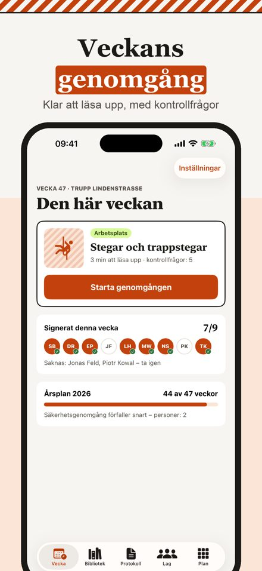
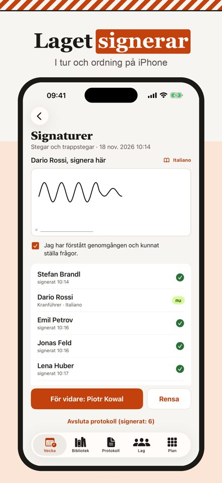
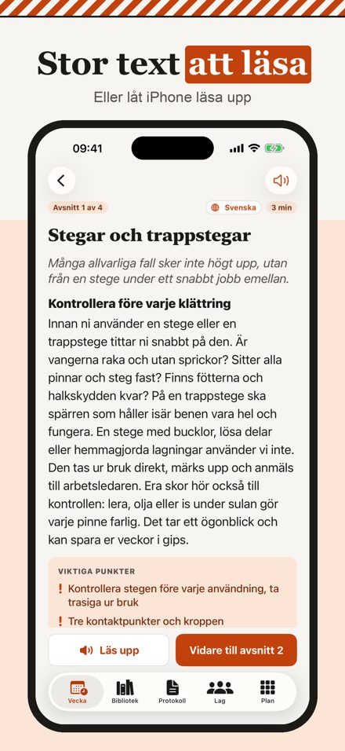
Brifora är biblioteket med korta säkerhetsgenomgångar för bygget, verkstaden och lagret. Varje vecka finns ett passande ämne: fyra minuter att läsa upp och fem kontrollfrågor. Laget signerar i tur och ordning på iPhone. Brifora gör ett protokoll med ämne, datum, plats, den som höll genomgången och signaturer som PDF. Årsplanen visar vem som står på tur och när.
Utan abonnemang: 6 genomgångar (en per område), 1 lag, 2 signerade protokoll i månaden. Brifora Plus är ett månads- eller årsabonnemang (provperiod på årsabonnemanget): alla genomgångar och nya paket varje kvartal, obegränsade protokoll som PDF och CSV, årsplan med påminnelse, flera lag och arbetsplatser, egna genomgångar, skanning av papperslistor. Förnyas automatiskt, säg upp när som helst i inställningarna för Apple-ID. Ingen reklam, inget konto.
Brifora är ett oberoende verktyg utan koppling till myndigheter, försäkringsbolag eller förbund. Genomgångarna ersätter varken riskbedömningen eller företagets egen introduktion. Arbetsgivaren ansvarar för arbetsmiljön.
Discorsi, firme e verbale PDF
Il briefing di sicurezza della settimana è pronto: leggi, fai le domande, la squadra firma sull’iPhone e il verbale esce in PDF. Senza account.
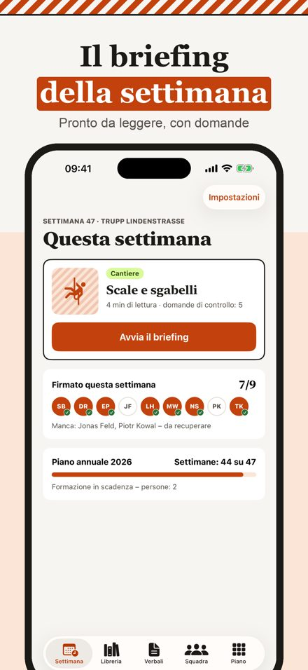
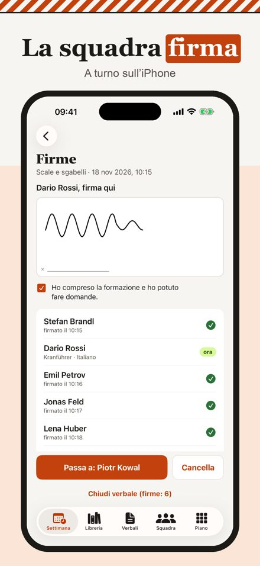
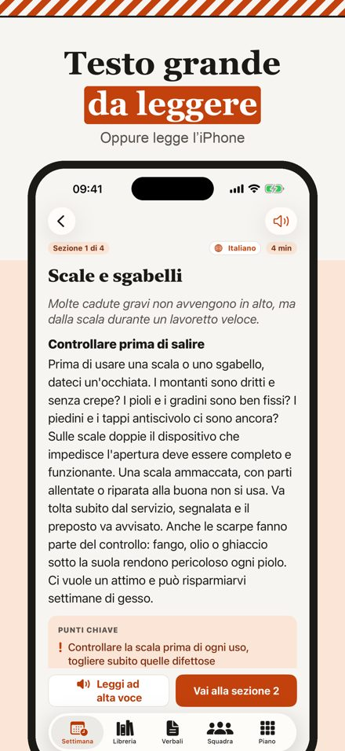
Brifora è la libreria di brevi briefing di sicurezza per cantiere, officina e magazzino. Ogni settimana c’è un tema adatto: quattro minuti da leggere e cinque domande di controllo. La squadra firma a turno sull’iPhone. Brifora ne fa il verbale con tema, data, luogo, chi ha condotto e firme in PDF. Il piano annuale mostra chi deve ripetere e quando.
Senza abbonamento: 6 briefing (uno per area), 1 squadra, 2 verbali firmati al mese. Brifora Plus è un abbonamento mensile o annuale (con prova sull’annuale): tutti i briefing e nuovi pacchetti ogni trimestre, verbali PDF e CSV illimitati, piano annuale con promemoria, più squadre e cantieri, briefing personali, scansione dei fogli cartacei. Rinnovo automatico, disdici quando vuoi nelle impostazioni dell’ID Apple. Nessuna pubblicità, nessun account.
Brifora è uno strumento indipendente, senza legami con enti pubblici, istituti assicurativi o associazioni. I briefing non sostituiscono la valutazione dei rischi né la formazione obbligatoria in azienda. Gli obblighi di sicurezza restano del datore di lavoro.
Charlas, firmas y acta en PDF
La charla de seguridad de la semana está lista: léela, haz las preguntas, el equipo firma en el iPhone y el acta sale en PDF. Sin cuenta.
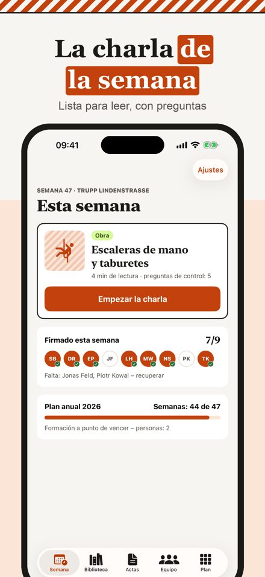
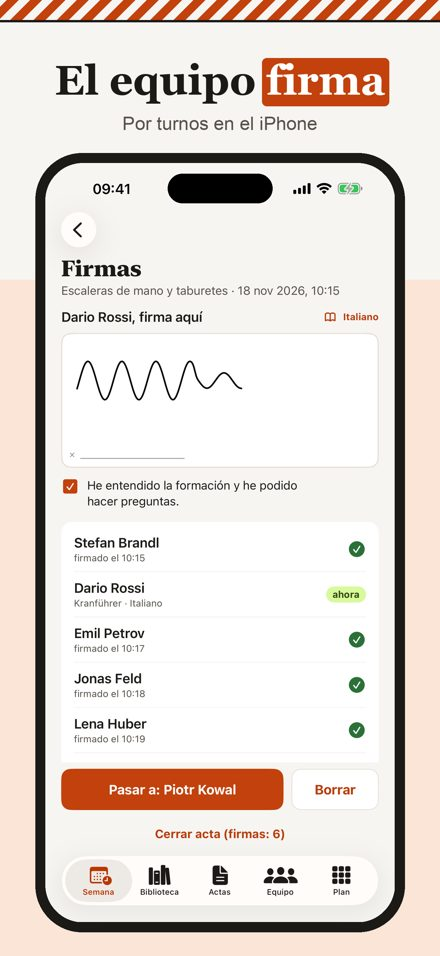
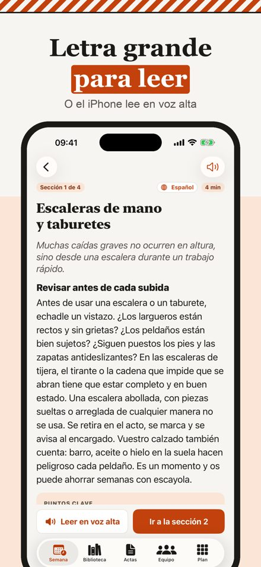
Brifora es la biblioteca de charlas de seguridad cortas para la obra, el taller y el almacén. Cada semana hay un tema adecuado: cuatro minutos de lectura y cinco preguntas de control. Tu equipo firma por turnos en el iPhone. Brifora genera el acta con tema, fecha, lugar, quien la impartió y firmas en PDF. El plan anual muestra a quién le toca y cuándo.
Sin suscripción: 6 charlas (una por área), 1 equipo, 2 actas firmadas al mes. Brifora Plus es una suscripción mensual o anual (con prueba en la anual): todas las charlas y nuevos paquetes cada trimestre, actas PDF y CSV ilimitadas, plan anual con recordatorio, varios equipos y obras, charlas propias, escaneo de hojas en papel. Se renueva automáticamente; cancela cuando quieras en los ajustes del ID de Apple. Sin anuncios, sin cuenta.
Brifora es una herramienta independiente, sin relación con administraciones, mutuas ni asociaciones. Las charlas no sustituyen la evaluación de riesgos ni la formación propia de la empresa. Las obligaciones de prevención siguen siendo del empresario.
Safety talks, signatures, PDF
This week’s toolbox talk is ready: read it out, ask the questions, the crew signs on the iPhone and the attendance record is a PDF. No account.
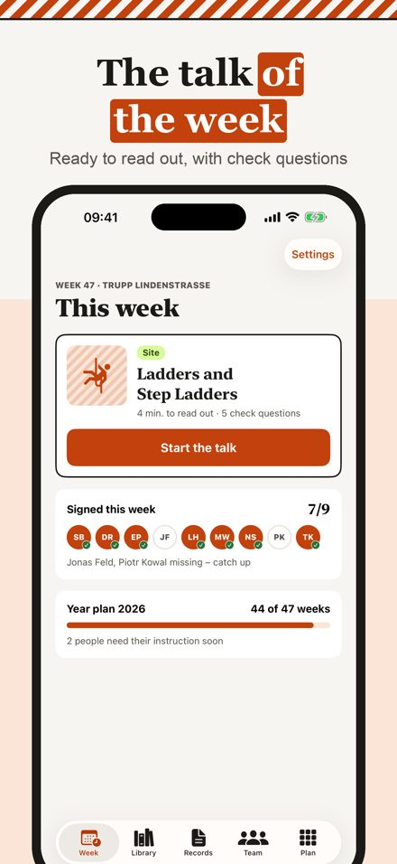
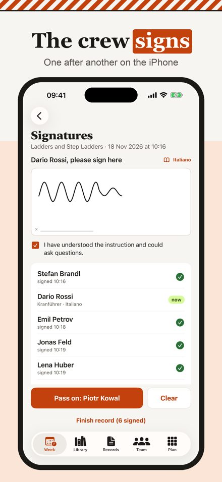
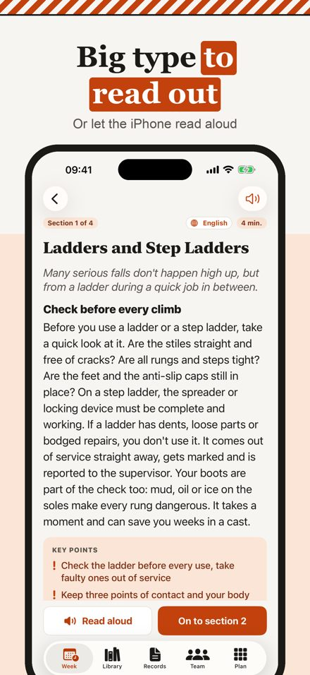
Brifora is the library of short safety talks for the site, the workshop and the warehouse. Every week a fitting topic is ready: four minutes to read out, with five check questions. Your crew signs one after another on the iPhone. Brifora turns it into the attendance record with topic, date, place, presenter and signatures as a PDF. The yearly plan shows who is due again and when.
Without a subscription: 6 talks (one per area), 1 team, 2 signed records a month. Brifora Plus is a monthly or yearly subscription (trial on yearly): every talk plus new packs each quarter, unlimited PDF and CSV records, yearly plan with reminders, several crews and sites, your own talks, paper scans. Renews automatically; cancel anytime in your Apple ID settings. No ads, no account.
Brifora is an independent tool, not affiliated with authorities, insurers or trade bodies. The talks do not replace your risk assessment or company-specific training. The employer remains responsible for health and safety duties.